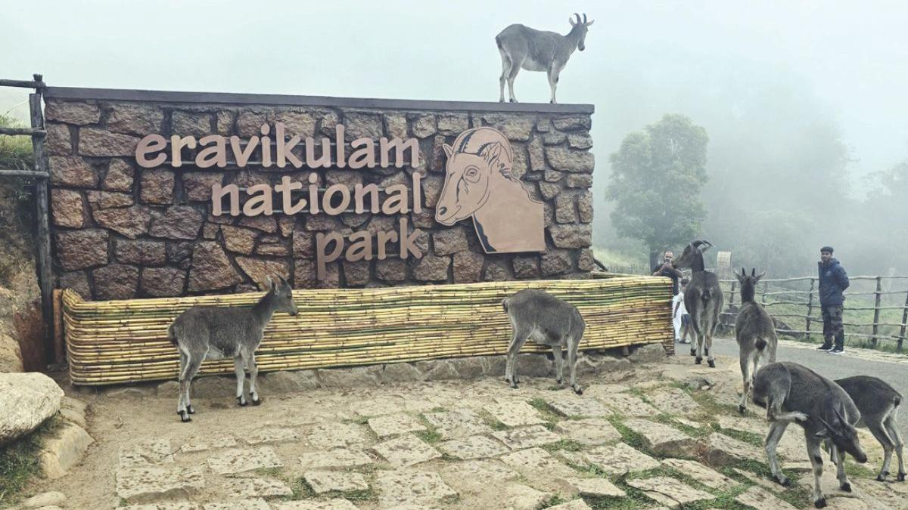
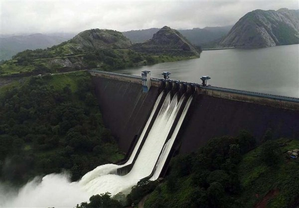
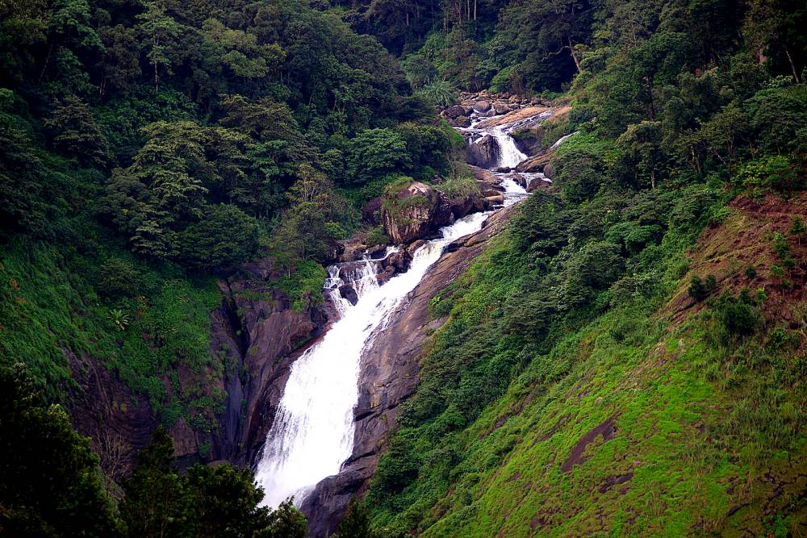
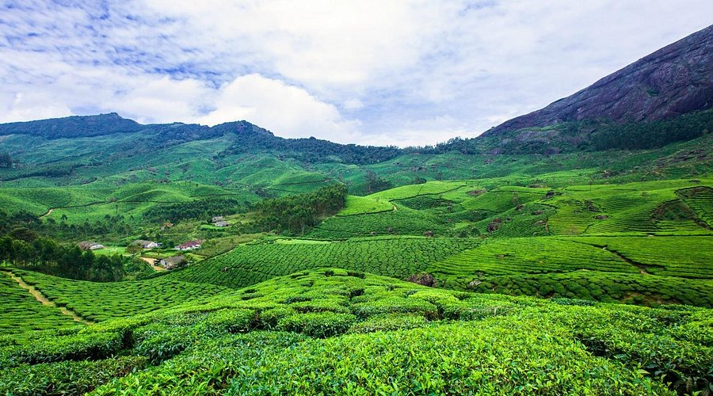
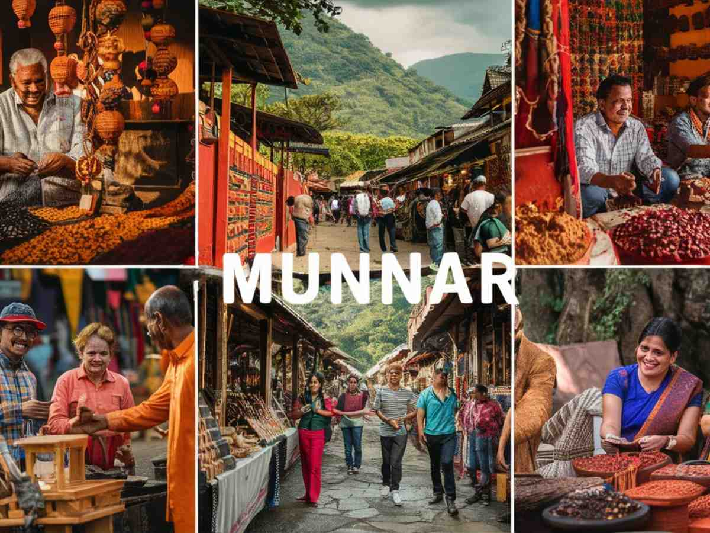
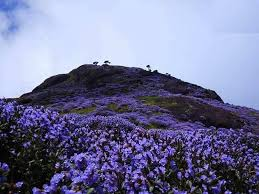

Munnar, nestled in the Western Ghats, is Kerala’s most famous hill station. Known for its sprawling tea plantations, rolling hills, exotic wildlife, and pleasant weather, Munnar is a paradise for honeymooners, trekkers, and nature lovers alike. Its colonial charm, serene valleys, and gushing waterfalls make it a must-visit destination.

Home to the endangered Nilgiri Tahr and breathtaking views of Anamudi Peak.

A beautiful picnic spot offering boating and scenic views of lush landscapes.

A stunning waterfall amidst rolling hills, perfect for trekking and photography.

Walk through endless stretches of tea estates and learn about tea-making.

Shop for spices, handmade chocolates, and traditional Kerala handicrafts.

Witness the rare Neelakurinji flowers that bloom once every 12 years.
Best Time to Visit: September to March for pleasant weather.
How to Reach: By Air - Cochin International Airport (110 km); By Train - Aluva Railway Station (110 km); By Road - Well-connected by buses and taxis.
Local Transport: Taxis, jeeps, and auto-rickshaws are commonly available.